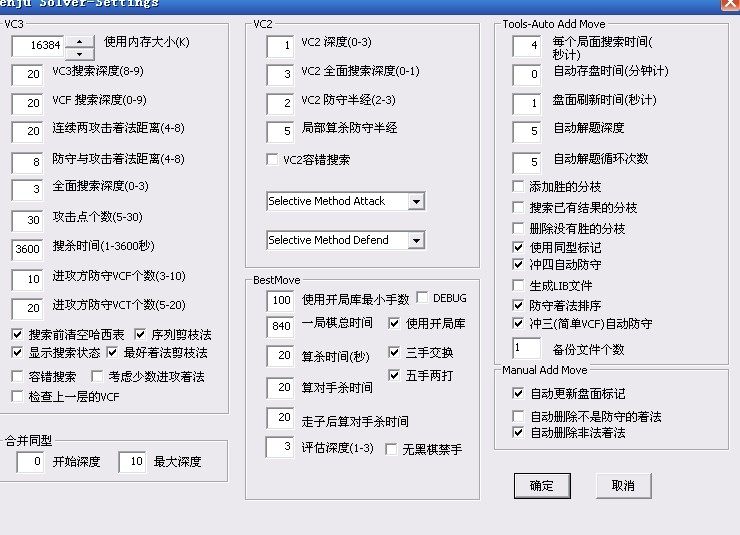
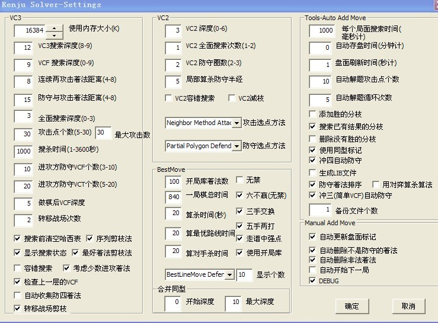

逆刃版终结者设置以及简单介绍
#1 逆刃版终结者设置以及简单介绍 作者：逆刃 发表时间：2012-1-26 22:02:40
目前拆棋比较少了，希望能帮助更多的人进步，我贴一下我的终结者设置图，不好勿喷。。正版我很少用，设置太多，我弄不来，个人感觉选项多的时候相对会有抑制作用，不能完全发挥出最好的速度，当然bug可能经过正确的设置后能降低到最少。大家可以试试看速度如何。目前极少见到bug，请自觉验证。
注：软件始终是软件，不可能没有bug的，软件仅仅是辅助工具，关键还是在于自己的理解。
注：速度，深度，广度，准确度不能同时满足的，请根据个人情况设置。
我的设置基本是按照速度和准确度来调整的，深度广度尽量达到计算上的最优路线选择，这样才能既快又准，节省掉很多繁琐和错误的计算时间。废话不多说，先贴图。
07版设置图：

08版设置图：

我也不知道为什么不同版本会有差异，估计是每一个选项的值设置得不同，另外以上截图仅仅是目前存档的图片，每一种设置都不可能是完美的，可以根据需要自行修正。本来还想介绍一下设置中每一个参数的意义的，想了想觉得没必要，记得以前也讨论过，但是大家觉得还是给出最直接的设置图更好，呵呵。
还是简单介绍下吧：
左上：
是计算参数设置，上面直接关系计算的参数是调整修正出来的，如“VCT、VCT搜索深度；进攻、防守距离”等，基本上数值大占用内存大，计算深，计算广，但是时间长,进攻、防守距离的数值可以稍微大一些。
其中“全面搜索深度，攻击点个数，搜杀时间，进攻VCT和VCF个数”一般都设置最大值，这几个对于速度印象并不大，因为不是直接关系都VCT的计算的。转移战场的次数这个选项我也没有弄太明白，但是感觉跟bug的出现有关系。
左下：
属于棋谱的修正设置，是否剪枝，是否重复验证，是否清空列表等，更计算的关系不大，但是关系到bug，我的建议是“容错搜索”这项是不能选的。
中上：
VC2的设置，一般来说VCT很快的时候很少会用到VC2，但是有VC2的简洁杀对于做谱来说会更加简便一些，根据个人习惯设置就好。
“攻击选点方法和防守选点方法”关系到做出谱的形状，大家看到很多谱，有的简单，有的是2圈，有的是3圈，就是和这个设置有关系，可以自行调整感受下。
中下：
规则和简单计算设置，个人感觉意义不大，一般设置后基本不需要调整。
左边：
很多是和自动解题及联网有关，也是根据个人的喜好设置就可以，不太懂的可以参考我的设置。另外需要注意一下的是“自动更新盘面标记”这个选项，如果你是在做必胜谱的话，我建议你勾选，软件就会自动生成啊a，c标记，如果是自己做的参考谱，需要手动打上去很多标记的话就不要选了。
就这么多吧，错误的希望给予指正，勿喷。
［ 失落刀 于 2012-1-26 23:24:24 时奖励此帖[金币加 100 威望加1］
［ 月光公主 于 2012-1-27 16:41:37 时花20金币送鲜花一朵］
［ 第五象限 于 2012-1-27 23:26:31 时花20金币送鲜花一朵］
［ 虎哥 于 2012-1-30 22:09:02 时花20金币送鲜花一朵］
［此帖子已被 逆刃 在 2012-2-13 12:42:18 编辑过］
［ 极地剑客 于 2012-5-28 2:50:40 时花20金币送鲜花一朵］
#2 Re:逆刃版终结者设置以及简单介绍 作者：极地剑客 发表时间：2012-1-26 22:45:05
俺也来围观说一下~俺只用07.08版~而且拆棋和网战设置不一样~网战求速度快~拆棋求准确无误.#3 Re:逆刃版终结者设置以及简单介绍 作者：与郎共五 发表时间：2012-1-27 8:39:19
好好学习一下怎么玩这个。不过纯手动表示也乐在其中
#4 Re:逆刃版终结者设置以及简单介绍 作者：自来水 发表时间：2012-1-27 9:17:18
也说说个人体会：
1.VCF深度一大它就出问题，有时候黑有简单VCF软件也全盘扫描。（08）
2.防守与进攻着法距离问题，有极少见的超出半径8的反击。（08）
3.电脑给的VCT，VC2攻击点...往往是不全的（07,08）
4.选择性防点没事漏强防，所以地毯要慎用，用来找路线还不错（07.08）
5.中间和右边的数据，根据拆解的不同局面可灵活调整以提高效率（07.08）
#5 Re:逆刃版终结者设置以及简单介绍 作者：月光公主 发表时间：2012-1-27 16:41:21
 谢谢逆刃老师
谢谢逆刃老师